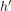
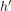

quotient group acts on the orbital collapse
1. Proposition
Let  be a topological space,
be a topological space,  a topological group and
a topological group and  a topological group action.
Then for a normal subgroup there exists a canonical, continuous Group Action
a topological group action.
Then for a normal subgroup there exists a canonical, continuous Group Action
2. Proof
2.1. welldefined
Suppose there exist and  such that
such that
Then there exist such that

Then we get

Let  .
Since conjugation is a group automorphism and
.
Since conjugation is a group automorphism and  is a normal subgroup, we conclude that there exists an  such that
is a normal subgroup, we conclude that there exists an  such that

thus

and by construction,

Thus

Or equivalently

2.2. continuous
By welldefinedness, this diagram commutes

By construction of a quotient topology, is continuous if and only if $ˆ πH{2} = πH ˆ $ is continuous, where is continuous as composition of continuous maps.
Furthermore, by universal property of a quotient topology , the (pseudo-)identity from to is continuous